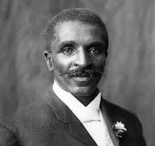

George Washing Carver
The man who made peanuts better

this is the caption for the photo
information about george washington carver
Visit The History Channel's page to learn more.
- 1864
- - Born in Diamond Grove, Missouri
- 1891
- - Begins studying art and piano at Simpson College in Iowa
- 1894
- - Accepted into Iowa State Agricultural College, the first African American student
- 1896
- - Graduated with Masters Degree from Iowa State
- 1914
- - Develops and promotes crop rotation to improve soil quality, particularly for peanuts and sweet potatoes
- 1921
- - Testifies before the House Ways and Means Committee in support of a tariff on imported peanuts
- 1928
- - Publishes his book titled "Nature's Garden for Victory and Peace", which emphasized the importance of sustainable agriculture
- 1938
- - Receives the Theodore Roosevelt Medal for distinguished service to the field of natural science
- 1940
- - Honored with a national monument, making it the first national monument dedicated to an African-American and non-president
- 1943
- - Passes away at the age of 78